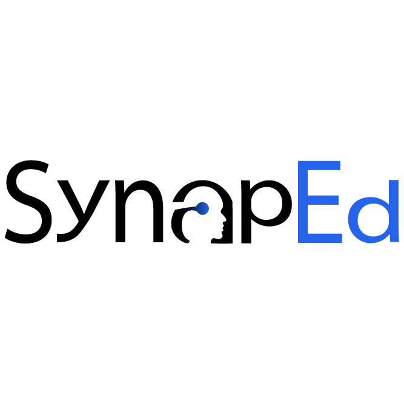

SynapEd · Fitur Kelas · usulan desain
Kelas, dengan sentuhan desain
Struktur data, alur, dan aturan aksesnya tidak berubah — yang berubah hanya cara semuanya ditampilkan. Tiap kelas kini punya warna sendiri yang dihitung dari namanya (tanpa field baru), ruang kelas dibagi menjadi umpan dan panel informasi, dan angka-angka kelas dibaca sebagai figur, bukan kalimat bertitik-titik.
Token "Tinta & Kertas" apa adanya
Tanpa data baru
Desktop + mobile
S1
/kelas — Kelas Saya (peserta)
Kartu kelas berwarna, gabung kode jadi ajakan yang jelas

Beranda
Tentang
Kurikulum
Kursus
FAQ
Jadi Educator
RA
Kelas
Kelas saya
Ruang diskusi bersama pengajar Anda. Dua kelas diikuti, satu kelas Anda kelola sendiri.
Kelas yang Anda ikuti
Terbaru di atas
NT
Neurosains Terapan 2026
Peserta
Kelas pendamping untuk peserta kursus Dasar Neuroscience. Diskusi mingguan dan pengumuman tugas.
24anggota
8postingan
Dibuat 12 Feb 2026
Buka kelas
AD
Analisis Data EEG — Angkatan 3
Peserta
Pendampingan praktikum pengolahan sinyal EEG dengan MNE-Python.
17anggota
3postingan
Dibuat 4 Mar 2026
Buka kelas
Kelas yang Anda kelola
Buka panel educator →
SB
Studi Bareng Sinyal Otak
Pengelola
Kelompok belajar mingguan, terbuka untuk alumni kursus mana pun.
9anggota
2postingan
Dibuat 20 Mar 2026
Kelola
Gabung kelas
Punya kode dari pengajar?
7KQ2M4XB
Gabung kelas
Delapan karakter, huruf besar. Huruf O, I, dan L otomatis dibetulkan jadi angka saat Anda mengetik.
Belum punya kode?
Kode undangan hanya dibagikan pengajar kepada pesertanya. Kelas tidak bisa dicari dari katalog.
S2
/kelas/[id] — Ruang kelas (peserta)
Umpan di kiri, informasi kelas di panel kanan
Beranda
Tentang
Kurikulum
Kursus
FAQ
Jadi Educator
RA
← Kelas Saya
Neurosains Terapan 2026
NT
Neurosains Terapan 2026
Kelas pendamping untuk peserta kursus Dasar Neuroscience. Diskusi mingguan dan pengumuman tugas.
Umpan kelas
8 postingan · terbaru di atas
BS
Bagas Setiawan
Pengajar
14 Mei 2026
Pertemuan minggu ini membahas potensial aksi dan propagasi sinyal di akson. Silakan baca modul 3 sebelum sesi Kamis, dan bawa pertanyaan Anda ke kolom balasan.
2 balasan
RA
Rani Aprilia
14 Mei 2026
Modul 3 yang dimaksud yang di kursus Dasar Neuroscience ya, Pak?
BS
Bagas Setiawan
Pengajar
14 Mei 2026
Betul, modul 3 di kursus itu. Halaman 12 sampai 24 saja.
BS
Bagas Setiawan
Pengajar
7 Mei 2026
Selamat datang di kelas. Perkenalkan diri Anda singkat di balasan: nama, asal kampus, dan alasan mengambil kelas ini.
Tentang kelas
Anggota24
Postingan8
Dibuat12 Feb 2026
RA
DP
SN
+21
Lihat anggota
Kursus terkait
Dasar Neuroscience
Lanjutkan belajar →
Keluar dari kelas
S3
/educator/classes/[id] — Ruang kelas (pengelola)
Kotak tulis di puncak umpan, kode undangan naik ke panel
Panel Educator
Kursus Saya
Kelas Saya
Profil Educator
Bagas Setiawan
Keluar
← Kelas Saya
Neurosains Terapan 2026
NT
Neurosains Terapan 2026
Kelas pendamping untuk peserta kursus Dasar Neuroscience. Diskusi mingguan dan pengumuman tugas.
Anggota
Pengaturan
BS
Tulis pengumuman, materi singkat, atau pengantar diskusi…
Teks polos · maksimal 5.000 karakter
Kirim ke kelas
Umpan kelas
8 postingan · terbaru di atas
BS
Bagas Setiawan
Pengajar
14 Mei 2026Hapus
Pertemuan minggu ini membahas potensial aksi dan propagasi sinyal di akson. Silakan baca modul 3 sebelum sesi Kamis, dan bawa pertanyaan Anda ke kolom balasan.
2 balasan
RA
Rani Aprilia
14 Mei 2026
Hapus
Modul 3 yang dimaksud yang di kursus Dasar Neuroscience ya, Pak?
BS
Bagas Setiawan
14 Mei 2026
Hapus
Betul, modul 3 di kursus itu. Halaman 12 sampai 24 saja.
Kode undangan
7KQ2M4XB
Salin
Ganti kode
Siapa pun yang memegang kode ini bisa bergabung dan membaca seluruh isi kelas. Ganti kodenya untuk menutup pendaftaran — anggota lama tidak terpengaruh.
Ringkasan
Anggota24
Postingan8
Dibuat12 Feb 2026
Hapus kelas
S4
Anggota kelas
← Kembali ke kelas
Anggota
Neurosains Terapan 2026 · 24 orang
Cari nama anggota…
Terbaru bergabung
BS
Bagas Setiawan
Pemilik kelas
RA
Rani Aprilia
Bergabung 12 Feb 2026
DP
Dimas Prakoso
Bergabung 13 Feb 2026
SN
Salma Nabila
Bergabung 15 Feb 2026
S5
Mobile
Kelas
Kelas saya
2 diikuti · 1 dikelola
Gabung kelas
7KQ2M4XB
Gabung
NT
Neurosains Terapan 2026
24 anggota · 8 postingan
AD
Analisis Data EEG — Angkatan 3
17 anggota · 3 postingan
← Kelas Saya
NT
Neurosains Terapan 2026
Bagas Setiawan · 24 anggota
Umpan
Tentang
BS
Bagas Setiawan
14 Mei 2026
Pertemuan minggu ini membahas potensial aksi dan propagasi sinyal di akson. Silakan baca modul 3 sebelum sesi Kamis.
Selamat datang di kelas. Perkenalkan diri Anda singkat di balasan.
Yang bisa dilanjutkan
"Buat kondisi kosong untuk S1" · "Terapkan gaya ini ke daftar kelas educator + form buat kelas" · "Coba warna kelas dari palet lain" · "Rapatkan kepadatan umpan di S2"